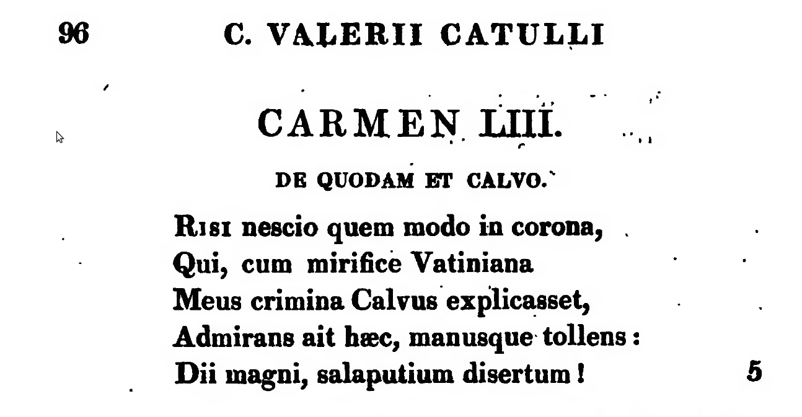
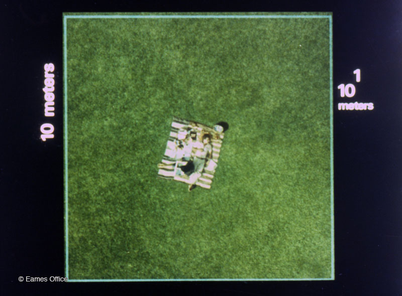
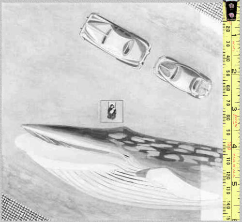

Edition?
Atomic?
Parallel?
Actionable and interoperable?
Powers of ten!
We do not design for books.
We design to make knowledge explicit.
We design to make explicit
knowledge about a text.
We design to make explicit
knowledge about complex cultural phenomena.
We design objects that will be manipulated.
"Manipulated" means:
reordered, relocated, reformatted, repurposed,
improved, enhanced, criticized.
To manipulate anything, we should be able to reach it.
The unreachable is unusable.
For a digital object, to reach is to cite:
provide an
address...
an address that is actionable.
Ergo: to manipulate anything digitally, we should be able to cite it
(in an actionable way).
The uncitable is unusable.
A digital object is reachable (citable)
if it has an identifier.
An identifier may be
an address, a number, a code.
How should an identifier for objects of an edition look like?
And what are the objects in an edition, anyway?

Catulli carmina, ed. Doering, 1820
An ordered hierarchy of content objects
The editor decides
(and is responsible for)
what to make citable in the text.
The editor is responsible for assigning (actionable) identifiers to the objects he or she wants to
make citable.
For example...
The identifiers (URNs) can be just numbers and letters.
The URNs can have a meaningful structure, reflecting hierarchical
levels of our edition.
The editor distinguishes
(and makes citable and actionable)
hierarchical
levels in an edition.
are a well known challenge.
Solutions:
multiple documents, milestones, joins, stand-off
markup?
CITE architecture makes it easy to handle multiple documents
(concurrent versions).
The editor is responsible for
separating concerns:
he or she has to organize
various categories of knowledge into separate documents.
Lectiones variae; corrections; metrical, grammatical, lexicographical
commentary...
Catullus 53:
Merrill (complete); Merrill (simplified markup); Merrill, c. 53 (tokenized into words); Merrill, c. 53 scanned; Merrill, c. 53 (tokenized into sentence); Merrill, c. 53 (lemmatized); Merrill, c. 53 (analyzed morphologically); Doering, c. 53 (tokenized into words, with commentary); Marulić, c. 53 (tokenized into words, with commentary)
croala.ffzg.unizg.hr/basex/catullus/urnlist
A new set of criteria on which to judge
a scholarly edition:
how well is its knowledge organized?
Actionable and interoperable?
A URN, published on the internet, becomes (digitally) reachable from the
outside world.
Remember: in a digital world, to reach is to (be able to) manipulate.
This is what "actionable" means.
But we have to know what we'll find.
We have to understand a URN
to be able to program for it!
This is what "interoperable" means.

Powers of Ten (Eames Office, 1977)

Cosmic View (Kees Boeke, 1957)
What will happen if CITE architecture is widely adopted?
What will happen if scholarly editions become actionable and
interoperable from "the top" to "the atomic level"?
What will happen if scholarly editions become actionable and
interoperable
in parallel?
My brain can manipulate two or five or ten ideas (in one go).
My computer can manipulate
tens or hundreds or thousands or millions
of objects (if they have identifiers).
If we give our knowledge digital form, boundaries and names, computers can
reach it and manipulate it.
Our knowledge becomes (digitally) actionable and interoperable.
My computer can manipulate
(combine, select, reorganize, repurpose...)
tens or hundreds or thousands or millions of (well identified) knowledge-objects.
We know how to interpret individual
(or a couple of) words, passages, texts, genres.
How will we interpret
thousands, millions of words, passages, texts, genres?
How will we check these interpretations?